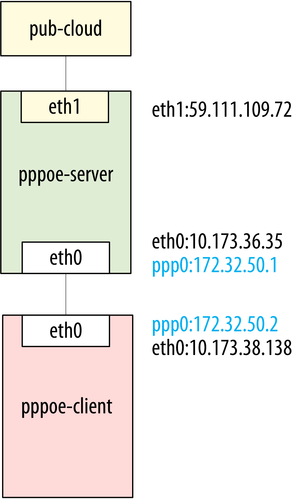
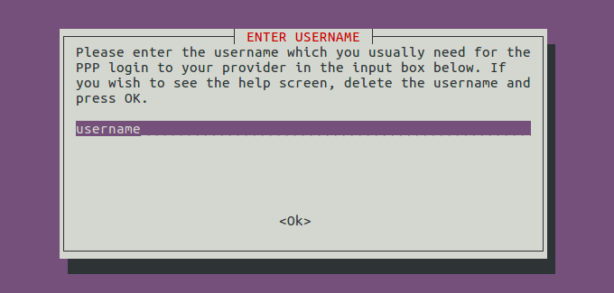
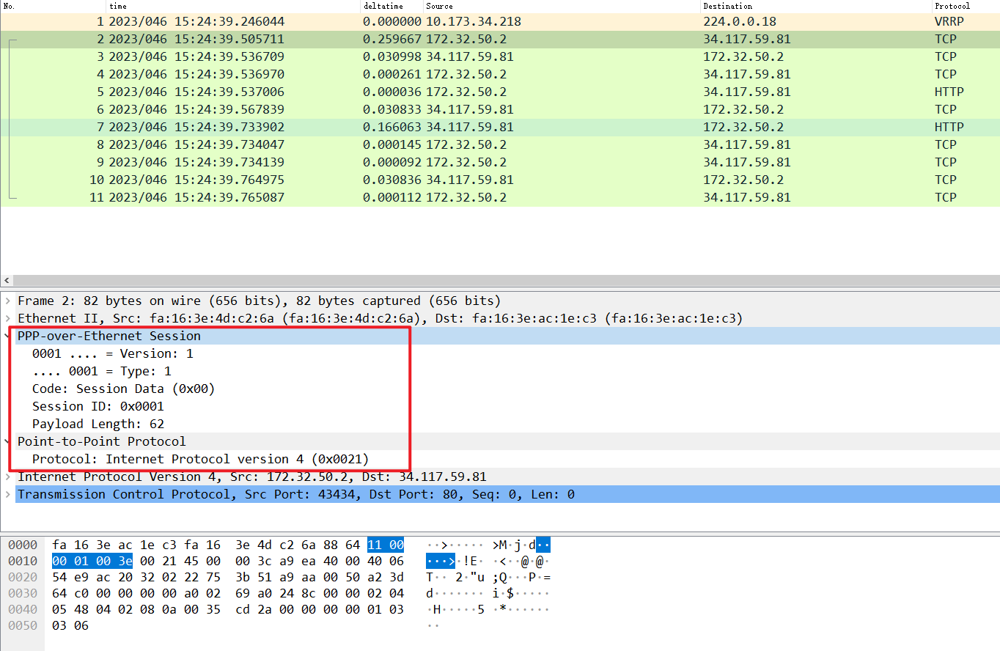

PPPOE 测试环境部署

server 端
在老云环境创建云主机
1
2
3
4
5
6
7
8
9
10
11
12
13
14
15
16
17
18
|
1: lo: <LOOPBACK,UP,LOWER_UP> mtu 65536 qdisc noqueue state UNKNOWN group default
link/loopback 00:00:00:00:00:00 brd 00:00:00:00:00:00
inet 127.0.0.1/8 scope host lo
valid_lft forever preferred_lft forever
inet6 ::1/128 scope host
valid_lft forever preferred_lft forever
2: eth0: <BROADCAST,MULTICAST,UP,LOWER_UP> mtu 1400 qdisc pfifo_fast state UP group default qlen 1000
link/ether fa:16:3e:ac:1e:c3 brd ff:ff:ff:ff:ff:ff
inet 10.173.36.35/21 brd 10.173.39.255 scope global eth0
valid_lft forever preferred_lft forever
inet6 fe80::f816:3eff:feac:1ec3/64 scope link
valid_lft forever preferred_lft forever
3: eth1: <BROADCAST,MULTICAST,UP,LOWER_UP> mtu 1500 qdisc pfifo_fast state UP group default qlen 1000
link/ether fa:17:00:12:00:49 brd ff:ff:ff:ff:ff:ff
inet 59.111.109.72/21 brd 59.111.103.255 scope global eth1
valid_lft forever preferred_lft forever
inet6 fe80::f817:ff:fe12:49/64 scope link
valid_lft forever preferred_lft forever
|
其中 eth0 是内网网卡，eth1 是外网网卡
安装服务
检查安装成功
1
2
3
|
dpkg -l | grep ppp
ii ppp 2.4.6-3.1+deb8u1 amd64 Point-to-Point Protocol (PPP) - daemon
ii pppoe 3.8-3 amd64 PPP over Ethernet driver
|
编辑配置文件
最主要的是修改 ms-dns ，使用 -pap, +chap.
配置文件为 /etc/ppp/options
1
2
3
4
5
6
7
8
9
10
11
12
13
14
|
# /etc/ppp/options
ms-dns 114.114.114.114
ms-dns 223.5.5.5
asyncmap 0
auth
crtscts
lock
hide-password
modem
-pap
+chap
lcp-echo-interval 30
lcp-echo-failure 4
noipx
|
配置 /etc/ppp/pppoe-server-options
1
2
3
4
5
6
7
|
# cat pppoe-server-options
# PPP options for the PPPoE server
# LIC: GPL
require-chap
lcp-echo-interval 60
lcp-echo-failure 5
logfile /var/log/pppd.log
|
配置 /etc/ppp/chap-secrets pppoe认证的用户名和密码
1
2
3
|
# Secrets for authentication using CHAP
# client server secret IP addresses
test * 123456 *
|
sever端ifconfig
1
2
3
4
5
6
7
8
9
10
11
12
13
14
15
16
17
18
19
20
21
22
23
24
25
26
27
28
29
30
31
32
33
34
35
|
root@111:/etc/ppp# ifconfig
eth0 Link encap:Ethernet HWaddr fa:16:3e:ac:1e:c3
inet addr:10.173.36.35 Bcast:10.173.39.255 Mask:255.255.248.0
inet6 addr: fe80::f816:3eff:feac:1ec3/64 Scope:Link
UP BROADCAST RUNNING MULTICAST MTU:1400 Metric:1
RX packets:363059 errors:0 dropped:0 overruns:0 frame:0
TX packets:24316 errors:0 dropped:0 overruns:0 carrier:0
collisions:0 txqueuelen:1000
RX bytes:19799537 (18.8 MiB) TX bytes:4576273 (4.3 MiB)
eth1 Link encap:Ethernet HWaddr fa:17:00:12:00:49
inet addr:59.111.109.72 Bcast:59.111.103.255 Mask:255.255.248.0
inet6 addr: fe80::f817:ff:fe12:49/64 Scope:Link
UP BROADCAST RUNNING MULTICAST MTU:1500 Metric:1
RX packets:109597003 errors:0 dropped:0 overruns:0 frame:0
TX packets:13671833 errors:0 dropped:0 overruns:0 carrier:0
collisions:0 txqueuelen:1000
RX bytes:61590280229 (57.3 GiB) TX bytes:14169288021 (13.1 GiB)
lo Link encap:Local Loopback
inet addr:127.0.0.1 Mask:255.0.0.0
inet6 addr: ::1/128 Scope:Host
UP LOOPBACK RUNNING MTU:65536 Metric:1
RX packets:10710 errors:0 dropped:0 overruns:0 frame:0
TX packets:10710 errors:0 dropped:0 overruns:0 carrier:0
collisions:0 txqueuelen:0
RX bytes:1586955 (1.5 MiB) TX bytes:1586955 (1.5 MiB)
ppp0 Link encap:Point-to-Point Protocol
inet addr:172.32.50.1 P-t-P:172.32.50.2 Mask:255.255.255.255
UP POINTOPOINT RUNNING NOARP MULTICAST MTU:1392 Metric:1
RX packets:70 errors:0 dropped:0 overruns:0 frame:0
TX packets:71 errors:0 dropped:0 overruns:0 carrier:0
collisions:0 txqueuelen:3
RX bytes:5573 (5.4 KiB) TX bytes:5920 (5.7 KiB)
|
client端
安装 pppoeconf
1
|
apt-get install pppoeconf
|
运行pppoeconf 一步一步操作即可
运行起来网卡会多一块ppp0

1
2
3
4
5
6
7
8
9
10
11
12
13
14
15
16
17
18
19
20
21
22
23
24
25
26
|
root@pppoe-client:/etc/ppp# ifconfig
eth0: flags=4163<UP,BROADCAST,RUNNING,MULTICAST> mtu 1400
inet 10.173.38.138 netmask 255.255.248.0 broadcast 10.173.39.255
inet6 fe80::f816:3eff:fe4d:c26a prefixlen 64 scopeid 0x20<link>
ether fa:16:3e:4d:c2:6a txqueuelen 1000 (Ethernet)
RX packets 43471 bytes 31822360 (30.3 MiB)
RX errors 0 dropped 0 overruns 0 frame 0
TX packets 20455 bytes 1433858 (1.3 MiB)
TX errors 0 dropped 0 overruns 0 carrier 0 collisions 0
lo: flags=73<UP,LOOPBACK,RUNNING> mtu 65536
inet 127.0.0.1 netmask 255.0.0.0
inet6 ::1 prefixlen 128 scopeid 0x10<host>
loop txqueuelen 1 (Local Loopback)
RX packets 20 bytes 1680 (1.6 KiB)
RX errors 0 dropped 0 overruns 0 frame 0
TX packets 20 bytes 1680 (1.6 KiB)
TX errors 0 dropped 0 overruns 0 carrier 0 collisions 0
ppp0: flags=4305<UP,POINTOPOINT,RUNNING,NOARP,MULTICAST> mtu 1392
inet 172.32.50.2 netmask 255.255.255.255 destination 172.32.50.1
ppp txqueuelen 3 (Point-to-Point Protocol)
RX packets 71 bytes 5920 (5.7 KiB)
RX errors 0 dropped 0 overruns 0 frame 0
TX packets 70 bytes 5573 (5.4 KiB)
TX errors 0 dropped 0 overruns 0 carrier 0 collisions 0
|
可以ping 通对端
1
2
3
4
5
6
7
8
9
|
root@pppoe-client:/etc/ppp# ping 172.32.50.1
PING 172.32.50.1 (172.32.50.1) 56(84) bytes of data.
64 bytes from 172.32.50.1: icmp_seq=1 ttl=64 time=0.697 ms
64 bytes from 172.32.50.1: icmp_seq=2 ttl=64 time=0.348 ms
64 bytes from 172.32.50.1: icmp_seq=3 ttl=64 time=0.393 ms
^C
--- 172.32.50.1 ping statistics ---
3 packets transmitted, 3 received, 0% packet loss, time 2053ms
rtt min/avg/max/mdev = 0.348/0.479/0.697/0.156 ms
|
clinet能够使用外网服务器上网
server端这样配置
使PPPOE客户端通过服务器的外网网卡共享上网。 PPPoE 协议接入控制的主要方式就是通过对IP数据包的封装再转发。所以要配置 PPPoE 服务器必须要开启IP转发功能。开启IP转发功能需要去除/etc/sysctl.conf 文件中 net.ipv4.ip_forward=1 该行的注释，随后运行 sudo sysctl -p 即可生效配置打开 IP 转发功能。
kill pppoe server 服务
然后这么启动服务
1
|
pppoe-server -C isp -L 172.32.50.1 -p /etc/ppp/ipaddress_pool -I eth0 -m 1412 -N 30
|
其中 ip pool是，用于分配客户端地址
1
2
|
root@111:/etc/ppp# cat /etc/ppp/ipaddress_pool
172.32.50.2-30
|
server端增加iptables规则
1
|
iptables -A POSTROUTING -t nat -s 172.32.50.0/24 -j MASQUERADE
|
此时客户端使用ppp0网卡已经可以通外网
1
2
3
4
5
6
7
8
9
|
root@pppoe-client:/etc/ppp# ping -I ppp0 114.114.114.114
PING 114.114.114.114 (114.114.114.114) from 172.32.50.2 ppp0: 56(84) bytes of data.
64 bytes from 114.114.114.114: icmp_seq=1 ttl=82 time=7.80 ms
64 bytes from 114.114.114.114: icmp_seq=2 ttl=91 time=7.44 ms
64 bytes from 114.114.114.114: icmp_seq=3 ttl=85 time=7.54 ms
^C
--- 114.114.114.114 ping statistics ---
3 packets transmitted, 3 received, 0% packet loss, time 2003ms
rtt min/avg/max/mdev = 7.448/7.599/7.803/0.165 ms
|
我们把 ipinfo.io 的路由配置为走ppp0 网卡
1
|
ip route add 34.117.59.81/32 via 172.32.50.2
|
这时 client curl ipinfo.io/ip 走的就是server 外网出口出去。
1
2
|
root@pppoe-client:/etc/ppp# curl ipinfo.io/ip
59.111.109.72
|
